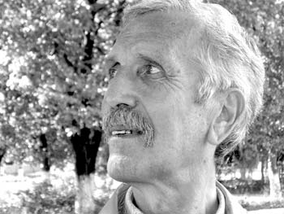

Ca o confirmare a spuselor lui M. Druc sunt personalitățile ilustre pe care neamul nostru le-a dat omenirii de-a lungul veacurilor. Dar să nu uitam că la apariția acestor personalități de talie mondială și-a adus aportul și sistemul de învățământ românesc care cel puțin de la A.I.Cuza încoace a fost unul de performanță . Un loc aparte în sistemul de învățământ modern creat de A.I.Cuza revine treptei liceale. Anume la această etapă are loc formarea omului ca personalitate și de calitățile formate în liceu depinde în bună măsura toată evoluția ulterioară a omului. În perioada interbelică învățământul liceal a stat la paza demnității naționale , a creat noi forțe specializate și noi eroi a societății. Anume această etapă deosebit de importantă a fost eliminată din învățământul sovietic , pentru a supune si mai mult spiritul național , model impus Basarabiei în perioada postbelică. Și ,iată, odată cu prăbușirea sistemului comunist și renașterea valorilor naționale în spațiul basarabean renaște și conceptul de liceu La începutul anilor ’90 în republica Moldova apar primele licee. Printre acestea se numără și Liceul Teoretic”B.P. Hasdeu” din orașul Drochia. Deschiderea primului liceu la Drochia se datorează unui grup de oameni curajoși ,adevărați patrioți ai neamului care au depus eforturi considerabile pentru realizarea acestei idei .
"Despre profesorul de istorie Marin Guivan auzisem de la niste intelectuali din Drochia.
«Daca ar fi fost mai multi ca Marin Guivan, atunci, la sigur, idealul nostru de la 1988–89 s–ar fi realizat», ziceau ei. Am vrut sa scriu ceva despre profesorul de istorie Guivan prin efortul caruia, in acel orasel provincial din nord, avem un liceu «Mihai Eminescu», unul — «B.P.Hasdeu», un monument al poetului Mihai Eminescu, dar si niste tineri care se identifica drept «generatia Guivan»".
În primul rând apariția liceului se datorează D-lui Marin Guivan , profesor de istorie și literatură română, în acea perioadă (1991) vice-președinte al Comitetului Executiv Raional Drochia . Domnia sa este autorul ideii despre liceul teoretic la Drochia ,dar și cel care a obținut realizarea acestei idei. Este cel care, prin eforturi sporite a obținut la 30 aprilie 1991 votarea de către Executivul Raional a unui demers către Guvernul R. Moldova de a deschide în orașul Drochia un Liceu Teoretic. La 3 iulie 1991 Guvernul a aprobat deschiderea acestei instituții de învățământ . decizia fiind luată , trebuia abținut un loc pentru liceu și creat creat corpul didactic .
Tocmai în acest timp după înăbușirea puciului de la Moscova din 19-21 august 1991 PCUS a fost scos în afara legii iar averea sa naționalizată .În acest context clădirea și imobilul fostului comitet raional de partid a fost dat în folosința liceului.
Tot în august 1991 a fost organizat un concurs al profesorilor pentru a alege pe cei mai buni să profeseze în instituția dată. Astfel a apărut colectivul L.T.”B.P.Hasdeu” în frunte cu Grigore Melnic și directorul adjunct Mircea Ciobanu ,colectiv care pe parcursul celor 20 de ani ce s-au scurs a demonstrat tărie si înțelepciune au dovedit ca știința si demnitatea omenească e mai presus ca orice și au rezistat orice ar fi . Din spusele D-nului Guivan ,citez: ”Aceștia au fost : Victor Scoferța , profesor de istorie , Ion Harea și Ion Caba , Profesori de matematică , Nicolae și Raisa Leahu , profesori de limba și literatura română , Iurie popa , profesor de istorie a culturii , Valeriu Eșanu și Melinte Iurie , profesori de limbă franceză ,Maria Schițco și Rodica Chitic ,profesoare de limba engleză , Violeta Bodean ,Profesoara de Chimie ,Valentina Concescu , profesoară de informatică … La început au fost 175 liceeni repartizați în 4 clase .: 4 de a XI-a și 3 de a X-a .”
Începutul nu a fost ușor. Nu existau manuale pentru licee , nu existau programe . Lucrătorii Ministerului de Educație aveau închipuiri foarte vagi despre conceptul de liceu . Profesorii angajați în liceu au trebuit să-și elaboreze singuri curricula materiei de studii ,să găsească sursele de informații necesare . De mare importanța la acest capitol a fost colaborarea cu liceele din Botoșani ,Dorohoi , Iasi care au contribuit și cu donații de lectură necesară. Liceele care apăreau apoi si se confruntau cu aceleași problema de tip programare a curriculei deseori primeau răspuns de la Ministerul Educație ”Consultați Liceul Hasdeu”, fapt care nea-a adus faimă și bine-voință .
Anii treceau colectivul de profesori se completa încontinuu . Creștea și numărul liceenilor. În anul de studii 2003-2004 în Liceul Teoretic ”B.P.Hadeu” Drochia studiau deja 406 elevi , repartizați în 16 clase .
Odată cu aceasta creștea și prestigiul liceului .El îndreptățea numele pe care în poartă. Datorită calităților și profunzimii cunoștințelor absolvenților , faima acestui liceu s-a dus departe de hotarele raionului Drochia .Absolvenții își continuau studiile la universitățile de la Chișinău , Bălți,București, Iași ,Cluj-Napoca ,Timișoara … În același timp , colectivul de profesori și elevi ,ani la rând era nevoie să se confrunte cu forțele distructive mancurto-bolșevice , cere vroiau cu orice preț să izgonească liceenii din localul în care îsi făceau studiile . Necazurile liceenilor și ale profesorilor , începând cu anul 1993 , vin de la conducerea raionului,.Fie agrarieni,fie comuniști – toți doreau să acapere clădirea Liceului și să distrugă colectivul profesoral care nu odată au promovat valori general umane . Ca primul liceu în raion , a fost și primul care a afirmat fără frică : ”Suntem Români!”. Nu era nimic de așteptat decât o agresie și mai dură din partea administrației raionale ,care deja nu doar își dorea clădirea dar și nimicirea celui germen de adevăr care abia încolțise în societate . După venirea comuniștilor în 2001 doar tactica adversarului s-a schimbat . Ne având bază didactică necesară și cadre didactice bine pregătite , comuniștii au început să transforme școlile medii în licee. Ca urmare, în raionul Drochia liceele au început să apară ca ciupercile după ploaie . Asta se făcea cu un singur scop : de a discredita învățământul liceal , iar î Drochia , în plus , de a submina Liceul ”B.P.Hasdeu”.
În plus in anul 2003 veniți la guvernare în raion partidul comunist bate alarma la cel mai drastic nivel, fiind gata să mișeleasca și chiar să pună lacăt la ușa liceului. Rezistența a fost la nivel enorm , la luptă ai ieșit toți cui ii era drag liceul . Toți au stat neclintiți în fața Consiliului Raional fără nici pic de spaimă . Lupta a fost câștigată, însă ”războiul” mai continua și astăzi. Nici un fel de insinuări sau încercări nu le-au reușit comuniștilor drochieni .Prea mari le-au fost poftele și prea mici –posibilitățile
În urma celor expuse de D-nul Marin Guivan , în fața căruia mă închin , a celor făcute de profesori pe parcursul celor 2 decenii , pot sigur afirma : ”sunt mândru că sunt Hasdean , că fac parte din această familie nobilă , si voi purta mereu în suflet al nostru Credo :Patrie Onoare și Știință ! ”
Liceul Teoretic ”Bogdan Petriceicu –Hasdeu ” este și va fi în viitor .Trăiască înțelepciunea ! Tu păgîne , ține minte , Hasdeul merge înainte !!